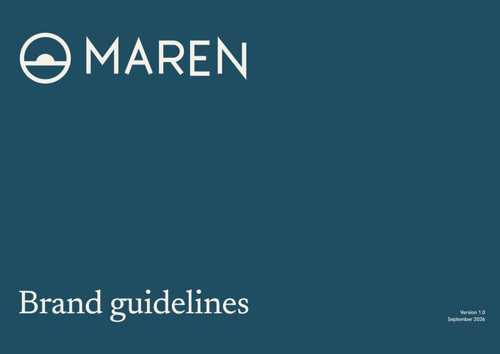
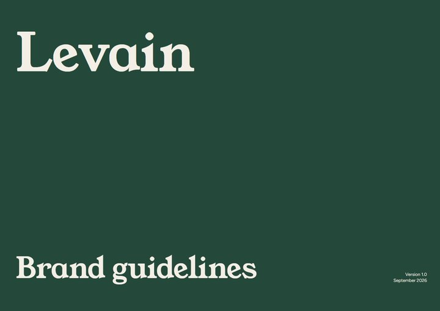
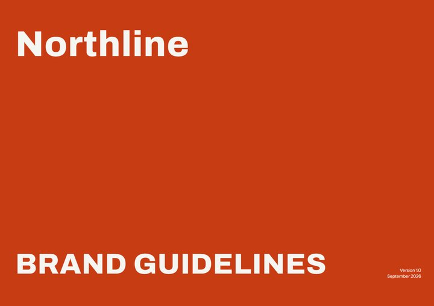

Brand Book
A Claude skill that turns a few answers into brand guidelines built the way the world's largest brands build theirs: colour and font proposals in a live picker, then a 27-page book.



What you have
Logo, colours, fonts: say what exists. Nothing already decided gets questioned.
What it should feel like
A few questions, only for what is missing.
The picker
Three palettes, font pairings, all of Google Fonts and your own files, in a live preview.
The book
27 pages: logo rules, colour, type, grid, mockups, tokens. Prints to A4.
git clone https://github.com/gutslfo/brand-book ~/.claude/skills/brand-book